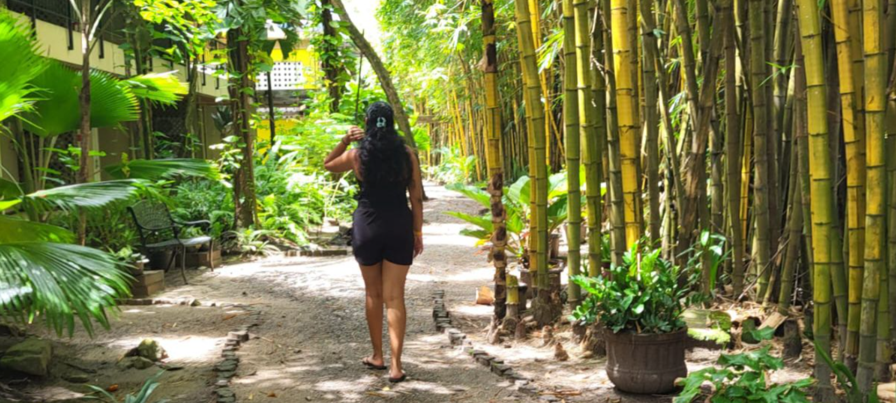

About Me
Wie ben ik?
Mijn naam is Anisha R. Patandin. Ik ben geïnteresseerd in technologie, design en het bouwen van websites. Ik leer graag nieuwe dingen en werk graag aan projecten waarin ik creativiteit en logica kan combineren.
In mijn vrije tijd werk ik aan mijn programmeervaardigheden en probeer ik mezelf stap voor stap te verbeteren.
Mijn vaardigheden
Autocad
HTML
CSS
JavaScript
Words
Design
Teamwork
Communicatie
Leergierig
Creatief denken
Stressbestendig
Probleemoplossend denken

Ik sta open voor nieuwe uitdagingen waarin ik mijn kennis kan uitbreiden en mijn vaardigheden verder kan ontwikkelen.